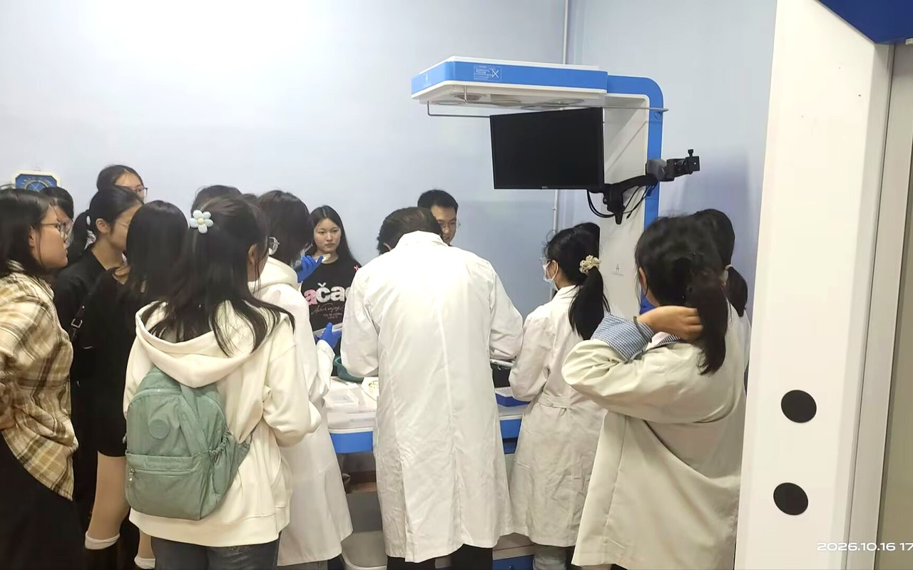
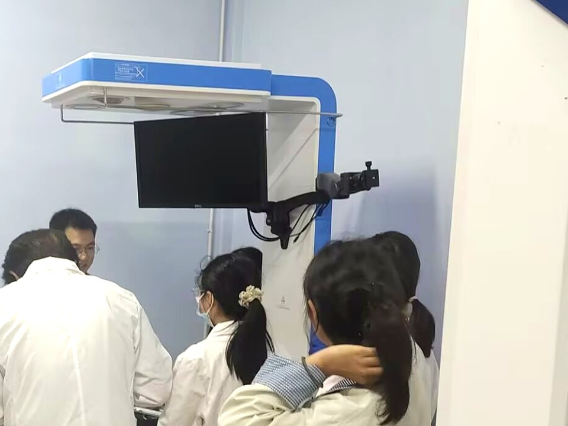
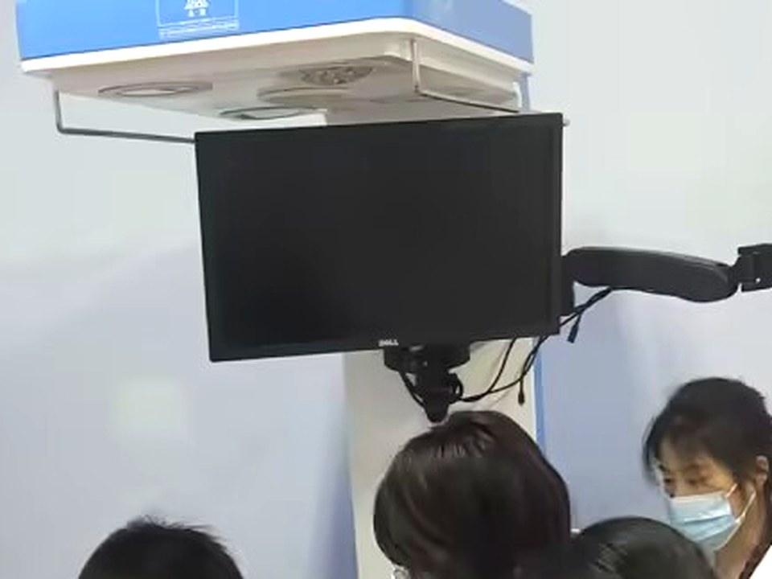
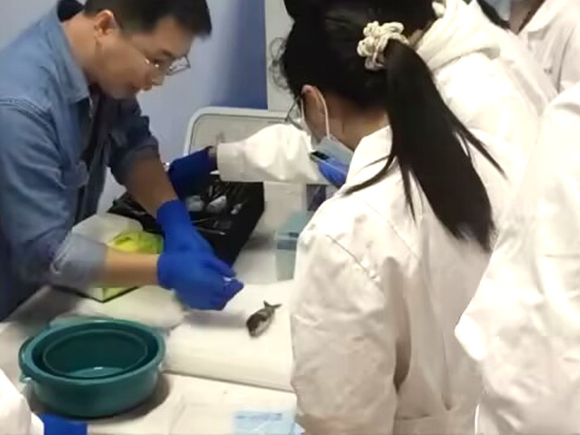
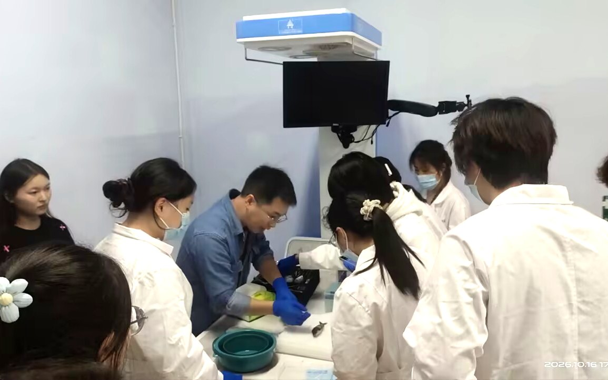

团队概况
ABOUT US
信息技术与生物医学交叉融合的高水平科研团队
团队简介ABOUT US
基本信息
四川文理学院信息与生物医学交叉创新团队经学校党委会批准成立，依托学校学科基础与人才优势，面向达州地区生命科学与生物医学领域的发展需求组建。团队现有核心成员 7 名，其中博士 5 名、硕士 2 名，并吸纳 30 余名在校本科生参与科研训练。
团队研究方向涵盖生物信息学、人工智能、分子免疫学、遗传学、干细胞与再生医学、流行病学与统计学、运动与健康促进及慢性脑缺血机制等领域。团队成员已发表高水平学术论文超过 50 篇，主持国家级、省部级及市厅级科研项目 18 项。团队致力于发挥多学科协同优势，构建涵盖机制解析、诊断预测、干预研究与成果转化的研究体系，服务达州地区疾病防控、健康管理与生物医学研究，为地方生命健康事业发展提供科技和人才支撑。
研究目标、内容及意义
团队围绕常见病、慢性病及重点人群健康需求，以阐明疾病机制、发现诊疗靶标和探索干预策略为主要目标，重点研究免疫相关疾病、神经损伤及慢性病的分子调控机制。通过整合基因组、转录组、蛋白组和代谢组等多组学数据，结合人工智能技术识别关键分子和生物标志物，构建疾病诊断、风险预测及预后评估模型；利用斑马鱼、小鼠等模式生物开展体内功能验证与机制研究；围绕组织修复和功能改善，探索干细胞、生物医学材料及运动干预的作用机制与应用潜力。
团队将加强与达州地区医疗机构、健康服务机构及相关企事业单位的合作，推动研究成果服务于疾病早期识别、精准诊疗、康复干预和居民健康管理。
拟解决的主要科学问题
团队重点研究免疫失衡、神经损伤及慢性病发生发展过程中的关键分子调控机制，识别具有诊疗价值的关键靶点；探索多组学数据与区域人群健康数据的有效整合方法，筛选具有稳定预测能力和明确生物学意义的标志物；阐明干细胞、生物医学材料及运动干预对组织修复与功能恢复的作用机制。
团队将生物信息学分析、人工智能建模、动物模型和实验验证有机结合，形成从区域人群风险识别、候选靶标筛选、功能验证和机制解析到干预策略评价的研究路径，提升四川文理学院服务达州地区医疗卫生与健康事业发展的科研能力。
支撑平台
依托四川文理学院，团队建有生物信息学计算平台，配备 3 台高性能计算设备，包括双路 Intel Xeon E5-2686 v4 服务器、联想 ThinkStation P920 工作站和 AMD EPYC 9754 服务器，拥有多核 CPU、大容量内存和存储资源，并配置 NVIDIA GeForce RTX 4090、RTX A4500 等 GPU，可满足大规模组学数据存储与分析、基因组组装与注释、遗传变异检测、泛基因组构建及人工智能模型训练等研究需求。
实验平台配备高效液相色谱仪、PCR 仪、冷冻离心机以及蛋白电泳、转膜和成像系统等常用仪器，可开展核酸与蛋白质检测、基因表达分析及相关分子生物学实验。现有计算与实验条件可为团队开展多组学数据挖掘、人工智能建模、候选靶标筛选和功能验证提供支撑，并为达州地区医疗机构和相关单位开展科研合作、数据分析及技术服务提供平台保障。
实验设备FACILITIES





团队实验平台面向教学与科研开放，配备分子检测、色谱分析、离心称量、培养观察与环境控制等各类仪器设备，支撑从样本处理到数据分析的完整实验链路。